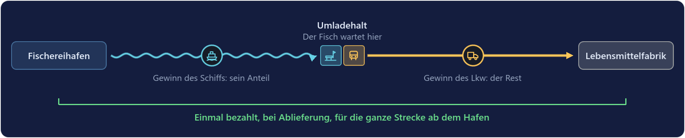

Halte & Aufträge
Wohin ein Fahrzeug fährt und was es dort tut.
Ein Fahrzeug fährt seine Halte der Reihe nach ab und beginnt dann wieder von vorn.
- An jedem Halt entlädt es nur, was diese Station annimmt. Dann wirst du bezahlt. Danach lädt es, was gerade wartet.
- Nicht angenommene Fracht bleibt an Bord, außer der Halt ist zum Umladen (siehe unten).
- Züge wenden am Streckenende, also reicht eine einfache Strecke von Ende zu Ende.
- Halte kannst du jederzeit im Fahrzeugfenster hinzufügen, entfernen und umsortieren.
Auf Karte wählen
- Drück Auf Karte wählen im Kauffenster oder im Fenster eines Fahrzeugs. Das Fenster tritt beiseite.
- Klicke deine Stationen nacheinander an. Jeder Klick fügt einen Halt hinzu, und die Leiste oben listet sie auf.
- Rückgängig entfernt den letzten Halt wieder.
- Die Auswahl bleibt aktiv, bis du Fertig oder Esc drückst.
- Bei einer Station, die du nicht nutzen kannst, steht neben der Maus, warum.
Volle Ladung
Jeder Halt hat im Fahrzeugfenster ein Kästchen Volle Ladung: Das Fahrzeug wartet dort, bis es voll ist. Nutze es dort, wo die Fracht herkommt, nie dort, wo sie abgeliefert wird.
Umladen
Fracht kann unterwegs das Fahrzeug wechseln. Angenommen, Fisch aus einem Fischereihafen soll per Schiff übers Meer und dann per Lkw ins Landesinnere zu einer Lebensmittelfabrik:


- Bau am anderen Ufer einen Hafen und direkt daneben eine Haltestelle, damit beide zu einer Station verschmelzen.
- Gib dem Schiff den Hafen am Fischereihafen und diese Station als Halte und hake beim zweiten Halt Umladen an (im Kauffenster oder im Schiffsfenster).
- Kauf Lkw, die von dieser Station zur Lebensmittelfabrik fahren.
- An einem Umladehalt lässt ein Fahrzeug die Fracht zurück, die der Halt nicht annimmt. Sie wartet dort auf deine anderen Fahrzeuge, die sie vor jeder anderen Fracht dieser Art mitnehmen.
- Deine Fahrzeuge können auch umgeladene Fracht von einer anderen deiner Stationen in höchstens 3 Feldern Entfernung aufnehmen, gemessen zwischen den nächstgelegenen Stationsfeldern. Im Stationsfenster findest du Nahegelegene Umladestationen. Lass Umladen am Abholhalt ausgeschaltet.
- Bezahlt wird einmal, bei der Ablieferung, für die ganze Strecke ab dem ersten Ladeort.
- Der Gewinn des ersten Fahrzeugs zeigt seinen Anteil an diesem Erlös, der des letzten den Rest – so siehst du, was jeder Abschnitt einbringt.
- Ein Fahrzeug nimmt nie Fracht wieder mit, die es selbst an seinem Umladehalt abgeladen hat.
Nur entladen, nicht beladen, über das Depot
Das kleine Menü neben dem Kästchen Umladen eines Halts bietet drei weitere Aufträge. Die Schaltfläche zeigt ein Symbol für jeden, der eingeschaltet ist.
- Nur entladen: Alles kommt heraus. Was die Station annimmt, wird geliefert und bezahlt; der Rest bleibt dort zum Umladen. Nichts wird eingeladen.
- Nicht beladen: Liefert, was die Station annimmt, lädt aber nichts ein, sodass das Fahrzeug seinen Platz für einen späteren Halt behält.
- Über das Depot: Nach dem Halt fährt das Fahrzeug, egal wie weit, in dein nächstes Depot zur Wartung und zu jedem bestellten Ladungswechsel. Schiffe und Flugzeuge werden an ihren Stationen versorgt.
- Ein Halt kann nicht gleichzeitig Nur entladen und Volle Ladung sein, und Nicht beladen ist aus, solange eines davon angehakt ist. Auf einer Linie gelten diese Aufträge für jedes ihrer Fahrzeuge.
Verirrte Fahrzeuge
Verirrt sich ein Fahrzeug, meldet es eine Nachricht: Klick darauf, um das Fahrzeug zu öffnen. Verirren sich mehrere auf einmal, öffnet die Nachricht die Probleme.
Ein Fahrzeug mit dem Status Verirrt findet keinen Weg zu seinem nächsten Halt. Es versucht es weiter; repariere Straße oder Gleis, dann fährt es weiter.
Ein Halt, dessen Station abgerissen wurde, ist im Fahrzeugfenster als Abgerissen markiert. Füge einen weiteren Halt hinzu, dann wird er aus der Route genommen.
Fracht wechseln
- Drück Fracht wechseln neben dem Ladebalken im Fahrzeugfenster, wähle die neue Fracht und bestätige.
- Das Fahrzeug liefert seine Ladung am nächsten Halt ab, lädt nichts neu und fährt in ein Depot, wo umgerüstet wird. Schiffe und Flugzeuge werden an diesem Halt umgerüstet.
- Bis dahin kannst du den Wechsel abbrechen und bekommst dein Geld zurück.
- Das Fahrzeug behält seine Aufträge, sein Alter und seinen Verlauf.
- Ein Zug kann auch Waggons dazubekommen, verlieren oder mischen. Einen Waggon umzurüsten kostet 975 $, ein neuer 6.500 $; ein abgehängter bringt seinen Restwert zurück.
- Alle anderen zahlen für den Wechsel 15% ihres Preises.
- Fracht an Bord, die nicht mehr passt, geht verloren.
Im Fahrzeugfenster
| Knopf | Was es tut |
|---|---|
| Folgen | Die Kamera bleibt am Fahrzeug. |
| Anhalten | Hält es an der nächsten Station an; drück erneut, um es zu starten. |
| Nur Züge: lässt ihn wenden, wo er steht, und schickt ihn zu einer seiner Stationen, die er in diese Richtung erreicht, sonst zu einem Depot. | |
| Klonen | Kauft noch eins mit denselben Aufträgen. |
| Erneuern | Tauscht es gegen ein brandneues desselben Modells. |
| Verkaufen | Zweimal klicken. Du bekommst seinen aktuellen Wert zurück. |